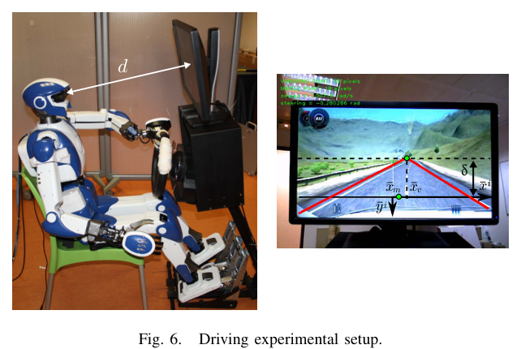
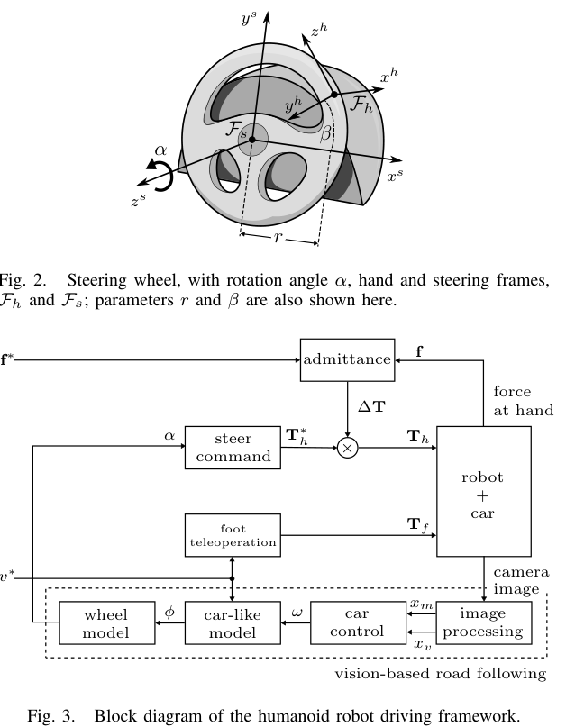

Line A
Conference
2014
Toward Autonomous Car Driving by a Humanoid Robot: A Sensor-Based Framework
A. Paolillo, A. Cherubini, F. Keith, A. Kheddar, M. Vendittelli. IEEE-RAS Int. Conf. on Humanoid Robots (Humanoids), 2014. 10.1109/HUMANOIDS.2014.7041400
Fig 6 — 실험 셋업

HRP-4가 의자에 앉아 Thrustmaster 핸들·페달로 City Car Driving 게임 도로를 운전. (클릭 시 확대)
Fig 3 — 제어 구조

아래 점선(비전)이 기준 조향각 α를, 위 어드미턴스 블록이 손 힘 f를 받아 안전한 핸들 회전을 만든다. (클릭 시 확대)
TL;DRHRP-4가 차량을 개조하지 않고 사람용 핸들을 손으로 직접 돌려 운전한 첫 시연. 도로 영상에서 조향각을 정하는 비전 컨트롤러와 손 힘센서 기반 어드미턴스 제어로 분해했다 (Fig 3). 학습 없는 반응형 제어의 출발점.
로봇
HRP-4 (Kawada, 1.5 m, 34 DoF)
차량
시뮬레이터 + 실제 Thrustmaster 핸들
센서
단안 카메라 + 손목 F/T
학습 여부
없음 (visual servoing)
연구 배경
사람이 운전하려면 면허·훈련이 필요하듯, 로봇이 사람처럼 운전하려면 그 기술을 옮겨야 한다. 차량을 개조할 수 없는 재난 현장(DRC의 첫 과제)에서는 사람이 몰던 차를 그대로 몰 로봇이 필요하다. 저자들은 완전한 운전을 여러 동작 프리미티브(탑승·자세·조작·하차)로 보고, 그 중심인 '도로를 따라 차를 모는 것'만 떼어 다룬다. 핵심 난제는 로봇이 사람용 기계(핸들·페달)를 스스로 조작하는 'humanoid in the loop'.
무엇을 했는가
차량을 개조하지 않고 휴머노이드가 사람용 핸들을 직접 돌려 도로를 따라 차를 모는 닫힌 루프(closed-loop) 제어 구조를 제안하고 HRP-4로 시연했다. 당시 DRC 운전 과제 참가팀이 전부 로봇을 원격조작하던 것과 달리, 로봇이 영상을 보고 스스로 핸들을 돌린다는 점이 신규성이다.
방법론 상세
- 차량 운동 모델 → 조향각. 차를 단륜차(unicycle)로 보고 경로의 횡오차·방향오차를 0으로 만드는 게 목표. 앞바퀴각이 핸들각에 비례한다고 두고 기준 각속도를 핸들각 α로 환산.
- 비전 기반 도로 추종. 도로 두 경계가 만나는 소실점과 경계 중점을 특징으로 삼아, 둘을 0으로 보내면 차가 차선 중앙으로 수렴(corridor following 차용).
- ★ 어드미턴스로 손이 핸들을 돌린다(핵심). 기준 손 자세를 그대로 위치제어하면 핸들과 부딪혀 위험하므로, 손목 F/T로 잰 힘을 가상의 질량–감쇠–강성으로 흡수해 보정량 ΔT를 만든다. 방향별 강성을 달리 줘 손이 핸들 림을 따라 부드럽게 미끄러지게 한다.
- 차선 검출. OpenCV Canny 에지 + Hough 변환으로 단순 구현(검출 자체는 본 연구의 초점이 아니라고 명시).
결과 / 시연
City Car Driving 게임 셋업에서 경사·조도 변화가 있는 곡선 도로를 약 300초 차선 중앙을 유지하며 자율 추종했다. 실차 야외는 특징 추출 예비 시험만 수행.
한계
실차가 아닌 게임 시뮬레이터 검증. 가속(페달)은 사람 원격조작으로 단순화해 자율은 조향뿐. 차선 검출이 단순해 복잡한 실제 도로에서는 미검증.
본 연구와의 관계
"차량은 그대로 두고 휴머노이드가 운전한다 + 인간형 센서만 쓴다"는 problem framing의 학술적 기원. 본 연구는 이를 학습·언어 기반 시대로 확장한다.